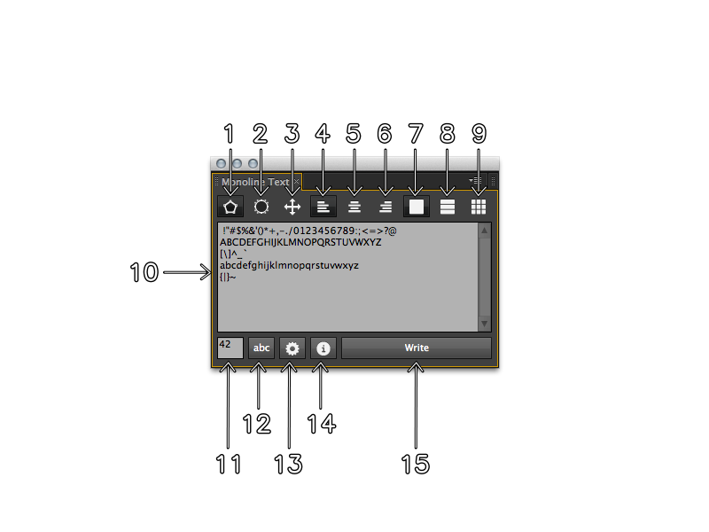

Monoline Text.jsx creates text from a single stroke vector set as mask on solids, shape layers or motionpaths. You can have all on one single layer, separate it by line or have every character as an individual layer.
To use the script you need to allow the script to read and write to disk. There is no data stored the only thing that happens is the creation of the icons for the toolbuttons. Go to Edit > Preferences > General (Windows) or After Effects > Preferences > General (Mac OS), and select the Allow Scripts To Write Files And Access Network option. Read more about it here
You can download the script at aescripts.com\ If you’re interested in the Illustrator script by Jongware take a look into the adobe forums
This script is based on a character set Dr. A. V. Hershey created for engraving around 1967. In 2010 Jongware wrote an Adobe Illustrator script that uses the simplex font. With his permission, the script has now been ported and extended for Adobe After Effects. It allows creating the text as shape layers, masks on solids or even motion paths. When using masks or shapes you can split the characters by line or have them all separated into single layers. You can align your text as you would do with normal text layers.

Feel free to to report everything you want over here or at the aescripts.com forum.
Copyright (c) 2013 Fabian “fabiantheblind” Morón Zirfas\ Permission is hereby granted, free of charge, to any person obtaining a copy of this software and associated documentation files (the “Software”), to deal in the Software without restriction, including without limitation the rights to use, copy, modify, merge, publish, distribute, sublicense, and/or sell copies of the Software, and to permit persons to whom the Software is furnished to do so, subject to the following conditions:\ The above copyright notice and this permission notice shall be included in all copies or substantial portions of the Software.\ THE SOFTWARE IS PROVIDED “AS IS”, WITHOUT WARRANTY OF ANY KIND, EXPRESS OR IMPLIED, INCLUDING BUT NOT LIMITED TO THE WARRANTIES OF MERCHANTABILITY, FITNESS FOR A PARTICULAR PURPOSE AND NONINFRINGEMENT. IN NO EVENT SHALL THE AUTHORS OR COPYRIGHT HOLDERS BE LIABLE FOR ANY CLAIM, DAMAGES OR OTHER LIABILITY, WHETHER IN AN ACTION OF CONTRACT, TORT OR OTHERWISE, ARISING FROM, OUT OF OR IN CONNECTION WITH THE SOFTWARE OR THE USE OR OTHER DEALINGS IN THE SOFTWARE.